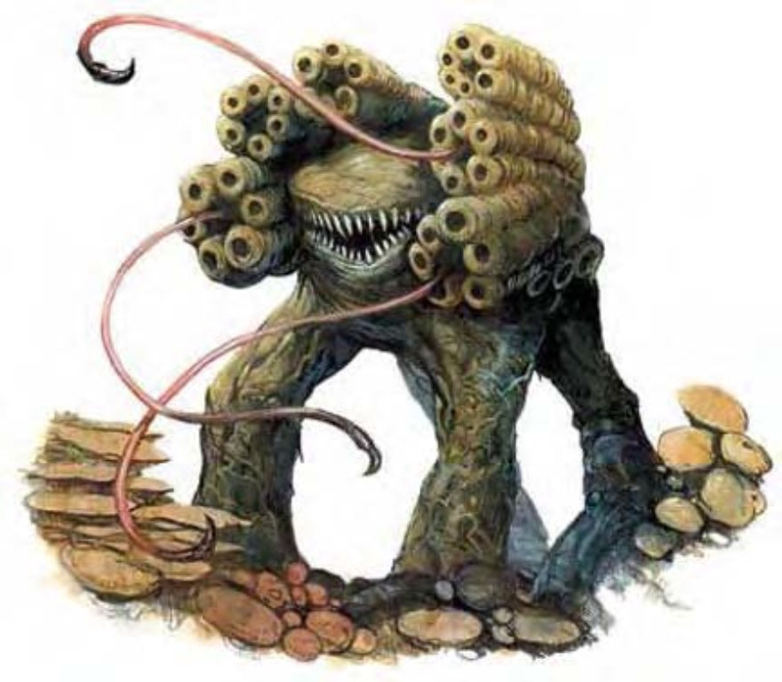

咯吱咯吱的细小足音，加上奇特的霉味，让你警觉到有生物靠近――但却又什么都看不到。
魅影蕈只有死了之后才会被人看到。其外形由褐色与绿褐色团块组合而成，顶着一个瘤状的主要团块，这就是他们的感觉器官。他们靠着一张裂嘴与成排牙齿猎食或攻击，由四只短腿支撑身体来移动。
这种会走动的蕈类天生隐形，对地底生物来说不只是种恐怖威胁。
| 资料栏位 | 魅影蕈 (Phantom Fungus) 中型植物 |
| 生命骰 | 2d8+6 (15HP) |
| 先攻 | +0 |
| 速度 | 20英尺 (4格) |
| 防御等级 | 14 (+4天生)、接触10、措手不及14 |
| 基本攻击/擒抱 | +1 / +3 |
| 攻击 | 啮咬+3近战 (1d6+3) |
| 全力攻击 | 啮咬+3近战 (1d6+3) |
| 占据/触及 | 5英尺 / 5英尺 |
| 特殊攻击 | ― |
| 特殊能力 | 昏暗视觉、植物特性、高等隐形 |
| 豁免 | 强韧+6、反射+0、意志+0 |
| 属性 | 力量14、敏捷10、体质16、智力2、感知11、魅力9 |
| 技能 | 聆听+4、潜行+6、侦察+4 |
| 专长 | 警觉 |
| 环境 | 地底 |
| 组织 | 单独 |
| 宝藏 | 无 |
| 阵营 | 总是绝对中立 |
| 进化 | 3-4HD (中型)；5-6HD (大型) |
| 等级修正值 | ― |
魅影蕈通常静静地漫游寻觅猎物。他会在任何场所攻击落单生物，若遇上一整个队伍，他会选择开阔空间以增加胜率。
高等隐形 (超自然)：为恒定能力，魅影蕈即使在攻击时都保持隐形。其运作方式很像“高等隐形术” (施法者等级12)，但持续到魅影蕈死亡为止。此能力不受“消除隐形”法术影响。魅影蕈死后1分钟才会现形。
技能：魅影蕈在进行“潜行”检定时具有+5加值。